GAnnoViz
1. Introduction
GAnnoViz: a R package for genomic annotation and visualization.
GAnnoViz (genomic annotation and visualization) is an R ecosystem specialized for annotating and visualizing chromosome-level gene functional elements in multi-omics. It provides core analysis and visualization functions through an R package and drives an online platform to enable experimental data analysis through real-time interaction. Currently, GAnnoViz includes 26 functions and 3 datasets. These functions are mainly used to address analytical needs in the following four aspects: extraction of genomic functional elements, drawing of linear gene structures, multi-omics sliding window annotation, and visualization of chromosome-level gene expression.
These functions are compatible with each other in terms of input and output results, collaborating freely and closely to complete complex analytical tasks. Although this project uses the genome of the model species mouse as a reference, it has been tested that standard structural annotations and omics data from any species are supported. It is worth noting that the results of transcriptome differential expression should be in the DESeq2 structure, while epigenome differential methylation data should refer to the MethylKit results as the standard.
GAnnoViz prioritizes the use of GRanges objects for parsing gene structures and interval annotations, and uses ggplot objects as the standard for graph drawing, facilitating high customization and long-term maintenance. This ecosystem adopts an open-source approach for suggestion adoption, new function iteration, continuous community maintenance, and is supported by the Hiplot cloud platform. The complete local or online help documentation contains detailed parameter descriptions and runnable examples of all functions, as well as a streamlined tutorial protocol.
Open Source Code: https://github.com/benben-miao/GAnnoViz/
Documents API: https://benben-miao.github.io/GAnnoViz/
Cloud Platform: https://shiny.hiplot.cn/gannoviz/

4. Extract Features
Extract Genes
# Example GFF3 file in GAnnoViz
gff_file <- system.file(
"extdata",
"example.gff3.gz",
package = "GAnnoViz")
# Extract Genes
# genes <- extract_genes(
# gff_file = gff_file,
# format = "auto",
# gene_info = "all")
# genes
# Gene info: gene_range
gene_range <- extract_genes(
gff_file = gff_file,
format = "auto",
gene_info = "gene_range")
head(gene_range)
#> IRanges object with 6 ranges and 0 metadata columns:
#> start end width
#> <integer> <integer> <integer>
#> ENSMUSG00000000001 108014596 108053462 38867
#> ENSMUSG00000000003 76881507 76897229 15723
#> ENSMUSG00000000028 18599197 18630737 31541
#> ENSMUSG00000000037 159865521 160041209 175689
#> ENSMUSG00000000049 108234180 108305222 71043
#> ENSMUSG00000000056 121128079 121146682 18604Extract CDS
# Extract CDS
# cds <- extract_cds(
# gff_file = gff_file,
# format = "auto",
# cds_info = "all")
# cds
# CDS info: cds_range
cds_range <- extract_cds(
gff_file = gff_file,
format = "auto",
cds_info = "cds_range")
head(cds_range)
#> IRanges object with 0 ranges and 0 metadata columns:
#> start end width
#> <integer> <integer> <integer>Extract Promoters
# Extract Promoters
# promoters <- extract_promoters(
# gff_file = gff_file,
# format = "auto",
# upstream = 2000,
# downstream = 200,
# promoter_info = "all")
# promoters
# Promoter info: promoter_range
promoter_range <- extract_promoters(
gff_file = gff_file,
format = "auto",
upstream = 2000,
downstream = 200,
promoter_info = "promoter_range")
head(promoter_range)
#> IRanges object with 6 ranges and 0 metadata columns:
#> start end width
#> <integer> <integer> <integer>
#> Lypla1-205 4876011 4878210 2200
#> Lypla1-201 4876046 4878245 2200
#> Lypla1-208 4876053 4878252 2200
#> Gm37988-201 4876115 4878314 2200
#> Lypla1-203 4876119 4878318 2200
#> Lypla1-206 4876121 4878320 2200Extract 5’UTR
# Extract 5'UTR
# utr5 <- extract_utr5(
# gff_file = gff_file,
# format = "auto",
# utr5_info = "all")
# utr5
# 5'UTR info: utr5_range
utr5_range <- extract_utr5(
gff_file = gff_file,
format = "auto",
utr5_info = "utr5_range")
head(utr5_range)
#> IRanges object with 0 ranges and 0 metadata columns:
#> start end width
#> <integer> <integer> <integer>5. Plot Structure
Plot gene stats for chromosomes
# Plot gene stats
plot_gene_stats(
gff_file = gff_file,
format = "auto",
bar_width = 0.7,
bar_color = "#0055ff55",
lable_size = 3)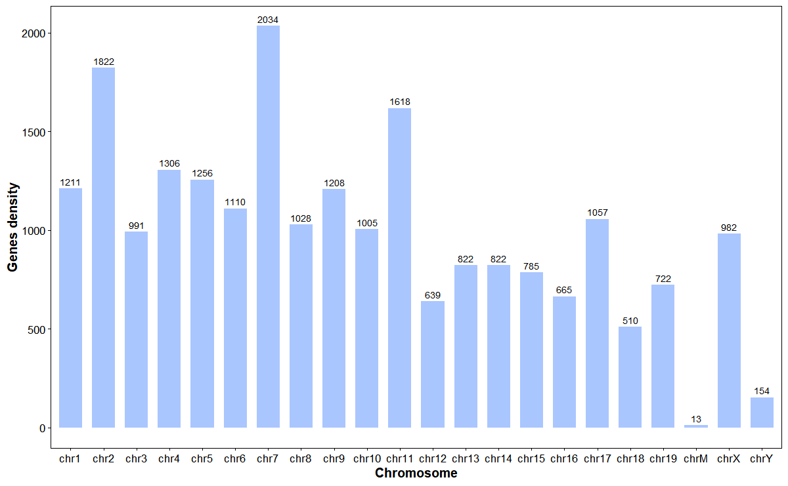
Plot gene structure (Promoter, 3’UTR, Exon, Intron, 5’UTR)
# Plot gene structure
plot_gene_structure(
gff_file = gff_file,
format = "auto",
gene_id = "ENSMUSG00000025935",
upstream = 2000,
downstream = 200,
feature_alpha = 0.8,
intron_width = 1,
x_breaks = 10,
arrow_length = 5,
arrow_count = 1,
arrow_unit = "pt",
promoter_color = "#ff8800",
utr5_color = "#008833",
utr3_color = "#ff0033",
exon_color = "#0033ff",
intron_color = "#333333"
)
Plot protein domains from Ensembl
# Plot TP53 domian
res <- plot_gene_domains(
gene_name = "TP53",
species = "hsapiens",
transcript_id = NULL,
transcript_choice = "longest",
palette = "Set 2",
legend_ncol = 2,
return_data = TRUE)
res$plot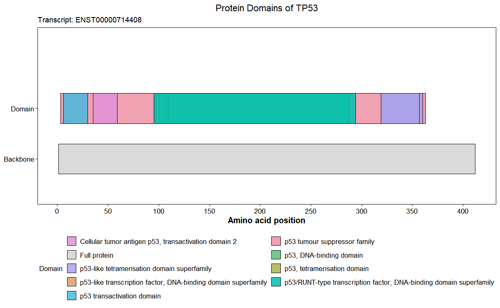
Plot gene structures for a genomic interval
# Plot interval structure
plot_interval_structure(
gff_file = gff_file,
format = "auto",
chrom_id = "chr1",
start = 13600000,
end = 13800000,
x_breaks = 10,
upstream = 2000,
downstream = 200,
feature_alpha = 0.8,
intron_width = 1,
arrow_count = 1,
arrow_length = 5,
arrow_unit = "pt",
promoter_color = "#ff8800",
utr5_color = "#008833",
utr3_color = "#ff0033",
exon_color = "#0033ff",
intron_color = "#333333"
)
Plot interval flank structure around a focal gene
# Neighborhood around a focal gene on its chromosome
plot_interval_flank(
gff_file = gff_file,
format = "auto",
gene_id = "ENSMUSG00000025935",
flank_upstream = 200000,
flank_downstream = 200000,
show_promoters = TRUE,
upstream = 2000,
downstream = 200,
arrow_length = 5,
arrow_unit = "pt",
gene_color = "#0088ff",
promoter_color = "#ff8800",
label_size = 3
)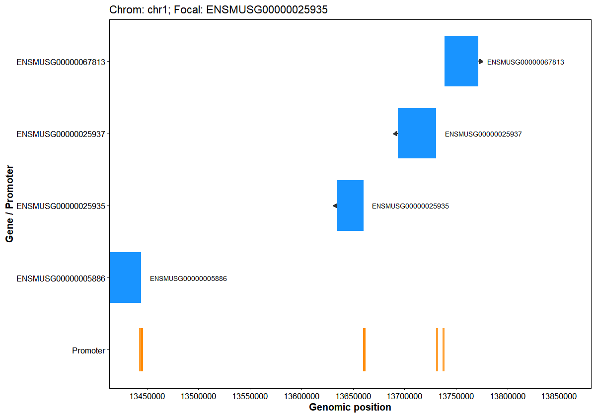
Plot chromosome structures and gene stats
# Plot chrom structure
plot_chrom_structure(
gff_file = gff_file,
format = "auto",
orientation = "vertical",
bar_width = 0.6,
chrom_alpha = 0.1,
gene_width = 0.5,
chrom_color = "#008888",
gene_color = "#0088ff",
telomere_color = "#ff0000",
label_size = 3
)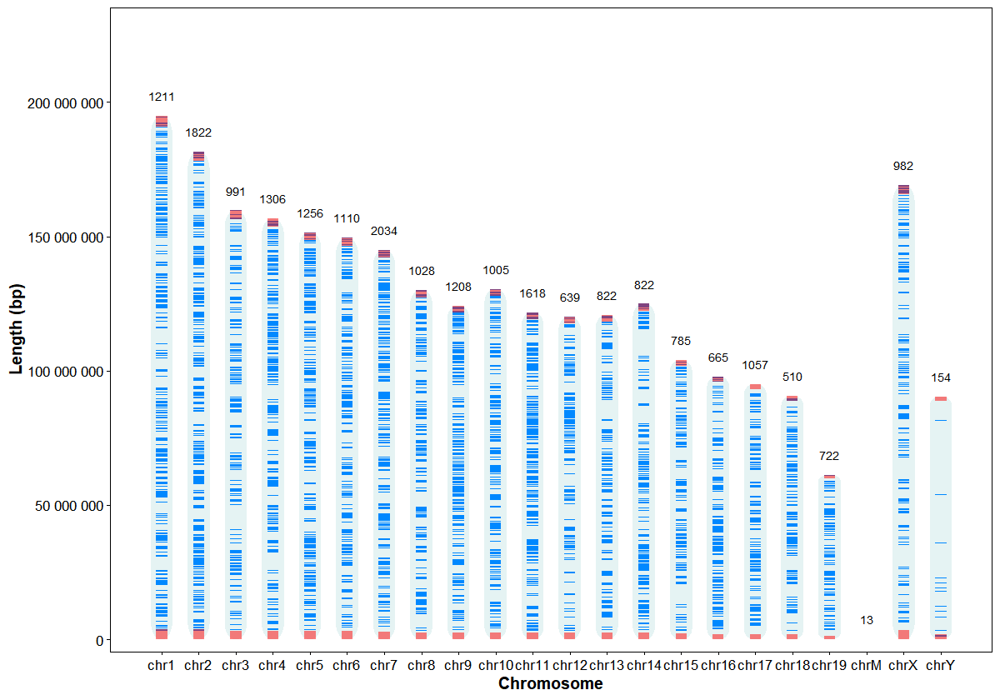
Plot chromosome structures and gene annotation
genes <- data.frame(
gene_id = c("ENSMUSG00000042414", "ENSMUSG00000025935", "ENSMUSG00000048701", "ENSMUSG00000035385"),
gene_name = c("Prdm14", "Tram1", "Ccdc6", "Ccl2"))
# Vertical, annotate by name
plot_chrom_genes(
gff_file = gff_file,
gene_table = genes,
annotate = "name",
orientation = "vertical")
Plot genomic feature density heatmap
# Gene density heatmap
plot_chrom_heatmap(
gff_file = gff_file,
format = "auto",
feature = "gene",
bin_size = 1e6,
orientation = "horizontal",
palette = c("#ffffff", "#0055aa"),
alpha = 0.9
)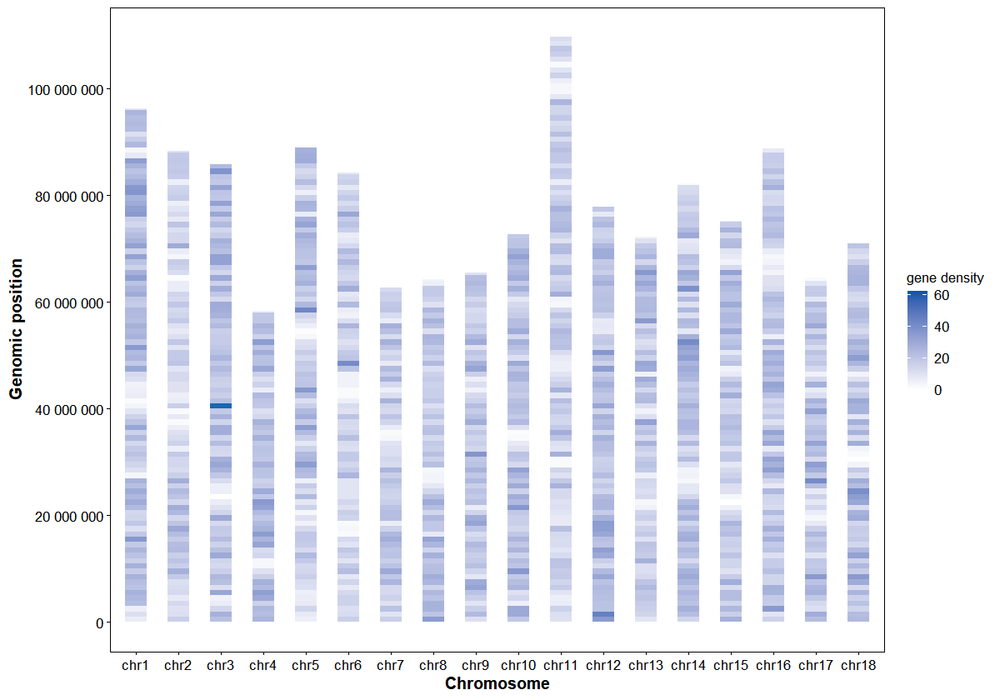
6. DEG Anno & Viz
Annotate differentially expressed genes (DEGs) with chromosome positions
# Example DEGs GAnnoViz
deg_file <- system.file(
"extdata",
"example.deg",
package = "GAnnoViz")
deg <- read.table(
file = deg_file,
header = TRUE,
sep = "\t",
na.strings = NA,
stringsAsFactors = FALSE
)
head(deg)
#> GeneID baseMean log2FoldChange lfcSE stat pvalue padj
#> 1 ENSMUSG00000025198 23869 -6.000000 0.2843066 -21.10398 7.31e-74 1e-40
#> 2 ENSMUSG00000025272 40302 5.595767 0.2788325 20.06856 1.39e-64 1e-40
#> 3 ENSMUSG00000064264 13298 -5.534248 0.2955626 -18.72446 3.13e-53 1e-40
#> 4 ENSMUSG00000046432 55113 6.000000 0.3230247 18.57443 5.17e-52 1e-40
#> 5 ENSMUSG00000102989 28945 5.953063 0.3218916 18.49400 2.31e-51 1e-40
#> 6 ENSMUSG00000103364 13437 4.987586 0.2709416 18.40835 1.13e-50 1e-40
# Annotate DEGs with chromosome positions
res <- anno_deg_chrom(
deg_file = deg_file,
gff_file = gff_file,
format = "auto",
id_col = "GeneID",
fc_col = "log2FoldChange",
use_strand = FALSE,
drop_unmapped = TRUE
)
head(res)
#> chrom start end gene_id score strand
#> 1 chr3 116306719 116343630 ENSMUSG00000000340 1.456567 *
#> 2 chr17 6869070 6877078 ENSMUSG00000000579 2.696704 *
#> 3 chr11 54988941 55003855 ENSMUSG00000000594 1.488543 *
#> 4 chr10 77877781 77899456 ENSMUSG00000000730 1.592217 *
#> 5 chr8 71261093 71274068 ENSMUSG00000000791 1.344079 *
#> 6 chr11 83538670 83540181 ENSMUSG00000000982 -2.094984 *Plot differentially expressed genes (DEGs) volcano
# Volcano plot
plot_deg_volcano(
deg_file = deg_file,
id_col = "GeneID",
fc_col = "log2FoldChange",
sig_col = "padj",
fc_threshold = 1,
sig_threshold = 0.05,
point_size = 2,
point_alpha = 0.5,
up_color = "#ff0000",
down_color = "#008800",
ns_color = "#888888"
)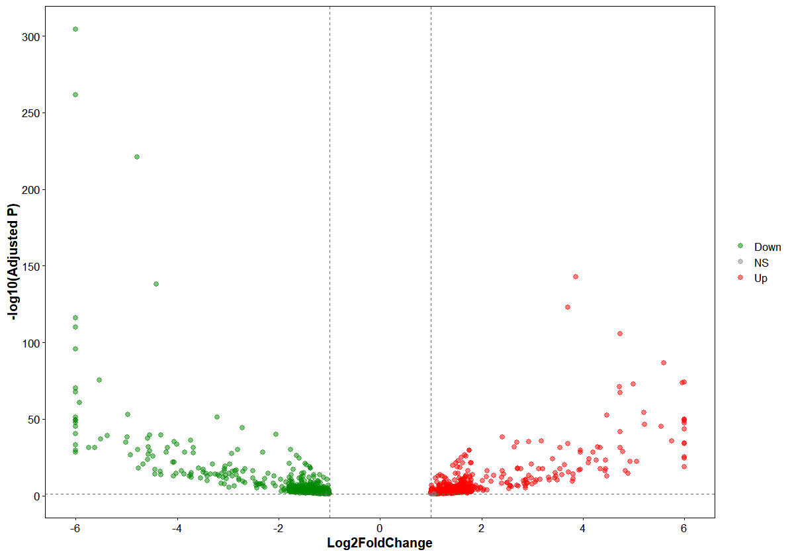
Plot differentially expressed genes (DEGs) hyper/hypo distributions by chromosome
# Plot chrom DEGs
plot_deg_chrom(
deg_file = deg_file,
gff_file = gff_file,
format = "auto",
id_col = "GeneID",
fc_col = "log2FoldChange",
violin_scale = "count",
violin_border = 0.5,
point_shape = 16,
point_size = 2,
jitter_width = 0.2,
hyper_color = "#ff000088",
hypo_color = "#00880088"
)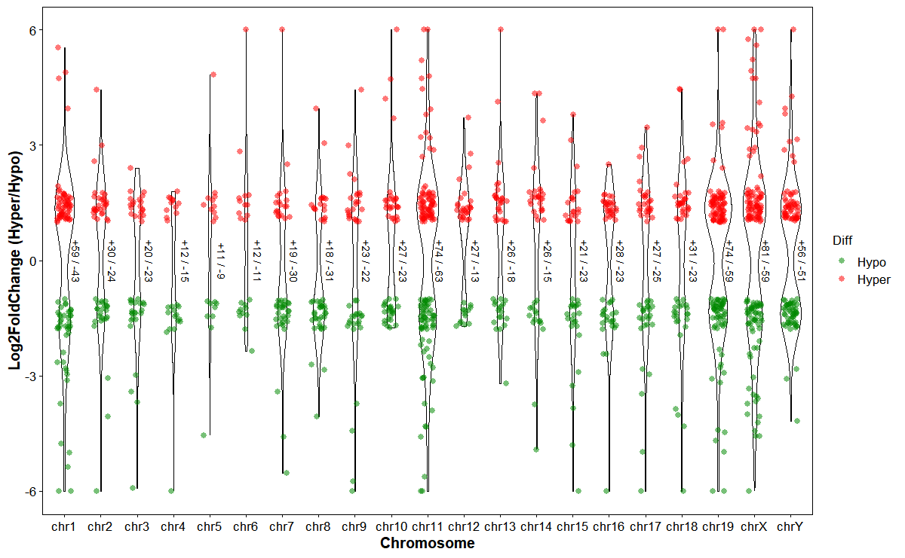
Plot DEGs up/down along chromosomes
plot_deg_exp(
deg_file = deg_file,
gff_file = gff_file,
format = "auto",
id_col = "GeneID",
fc_col = "log2FoldChange",
orientation = "horizontal",
chrom_alpha = 0.1,
chrom_color = "#008888",
bar_height = 0.8,
point_size = 2,
point_alpha = 0.3,
up_color = "#ff0000",
down_color = "#008800",
mark_style = "point",
line_width = 0.6,
line_height = 0.8)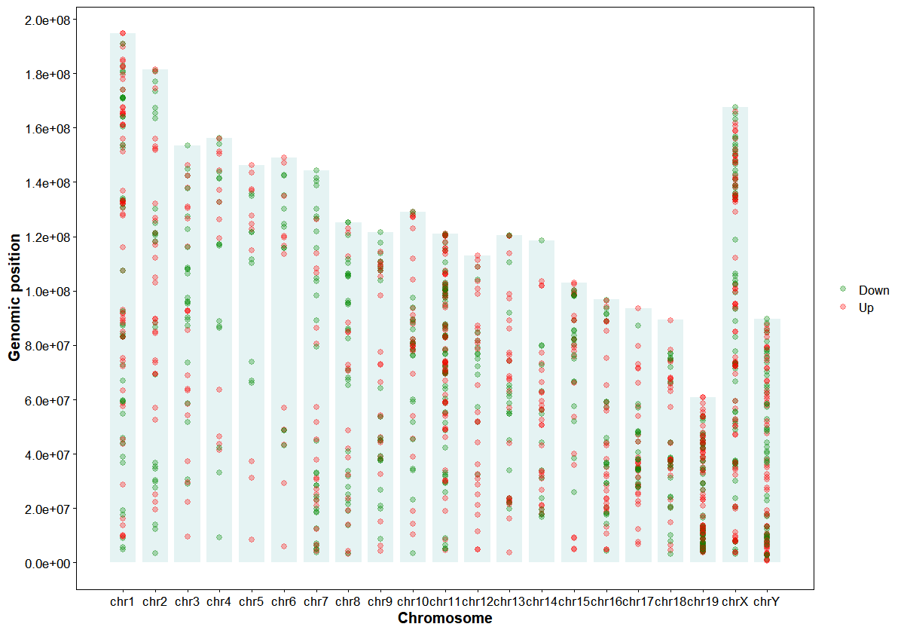
7. SNP Anno & Plot
Annotate FST slide windows with genomic features
# Annotate FST
fst_file <- system.file(
"extdata",
"example.fst",
package = "GAnnoViz")
fst <- read.table(
file = fst_file,
header = TRUE,
sep = "\t",
na.strings = "NA",
stringsAsFactors = FALSE
)
head(fst)
#> CHROM BIN_START BIN_END N_VARIANTS WEIGHTED_FST MEAN_FST
#> 1 chr1 1 10000 119 0.034869746 0.027472144
#> 2 chr1 20001 30000 150 -0.009735326 -0.019103882
#> 3 chr1 40001 50000 587 -0.013269573 -0.004886184
#> 4 chr1 60001 70000 256 0.036700847 0.027643440
#> 5 chr1 80001 90000 842 0.020847846 0.011547497
#> 6 chr1 100001 110000 892 0.001750007 0.002121159
res <- anno_fst_dmr(
gff_file = gff_file,
format = "auto",
genomic_ranges = fst_file,
chrom_col = "CHROM",
start_col = "BIN_START",
end_col = "BIN_END",
upstream = 2000,
downstream = 200,
ignore_strand = TRUE,
features = c("promoter", "UTR5", "gene", "exon", "intron", "CDS", "UTR3", "intergenic")
)
head(res)
#> CHROM BIN_START BIN_END N_VARIANTS WEIGHTED_FST MEAN_FST anno_type
#> 1 chr1 1 10000 119 0.034869746 0.027472144 intergenic
#> 2 chr1 20001 30000 150 -0.009735326 -0.019103882 intergenic
#> 3 chr1 40001 50000 587 -0.013269573 -0.004886184 intergenic
#> 4 chr1 60001 70000 256 0.036700847 0.027643440 intergenic
#> 5 chr1 80001 90000 842 0.020847846 0.011547497 intergenic
#> 6 chr1 100001 110000 892 0.001750007 0.002121159 intergenic
#> gene_id
#> 1
#> 2
#> 3
#> 4
#> 5
#> 6Annotate DMR slide windows with genomic features
# Annotate DMR
dmr_file <- system.file(
"extdata",
"example.dmr",
package = "GAnnoViz")
dmr <- read.table(
file = dmr_file,
header = TRUE,
sep = "\t",
na.strings = "NA",
stringsAsFactors = FALSE
)
head(dmr)
#> chr start end strand pvalue qvalue meth.diff
#> 1 chr1 4930001 4932000 * 1e-07 0.009117 89.850
#> 2 chr1 4936001 4938000 * 1e-08 0.005656 -82.314
#> 3 chr1 5670001 5672000 * 1e-09 0.011313 -69.908
#> 4 chr1 5914001 5916000 * 1e-09 0.001782 -93.310
#> 5 chr1 8576001 8578000 * 1e-08 0.009556 -68.589
#> 6 chr1 9098001 9100000 * 1e-07 0.009733 -68.756
res <- anno_fst_dmr(
gff_file = gff_file,
format = "auto",
genomic_ranges = dmr_file,
chrom_col = "chr",
start_col = "start",
end_col = "end",
upstream = 2000,
downstream = 200,
ignore_strand = TRUE,
features = c("promoter", "UTR5", "gene", "exon", "intron", "CDS", "UTR3", "intergenic")
)
head(res)
#> chr start end strand pvalue qvalue meth.diff anno_type
#> 1 chr1 4930001 4932000 * 1e-07 0.009117 89.850 gene,intron
#> 2 chr1 4936001 4938000 * 1e-08 0.005656 -82.314 gene,exon,intron
#> 3 chr1 5670001 5672000 * 1e-09 0.011313 -69.908 gene,intron
#> 4 chr1 5914001 5916000 * 1e-09 0.001782 -93.310 intergenic
#> 5 chr1 8576001 8578000 * 1e-08 0.009556 -68.589 gene,intron
#> 6 chr1 9098001 9100000 * 1e-07 0.009733 -68.756 gene,intron
#> gene_id
#> 1 ENSMUSG00000033813(g),ENSMUSG00000104217(g)
#> 2 ENSMUSG00000033813(g),ENSMUSG00000104217(g)
#> 3 ENSMUSG00000025905(g)
#> 4
#> 5 ENSMUSG00000025909(g)
#> 6 ENSMUSG00000025909(g)Plot SNP density at chromosome level
# Plot SNP density
plot_snp_density(
fst_file = fst_file,
LOG10 = FALSE,
bin_size = 1e6,
density_color = c("#0088ff", "#ff8800", "#ff0000")
)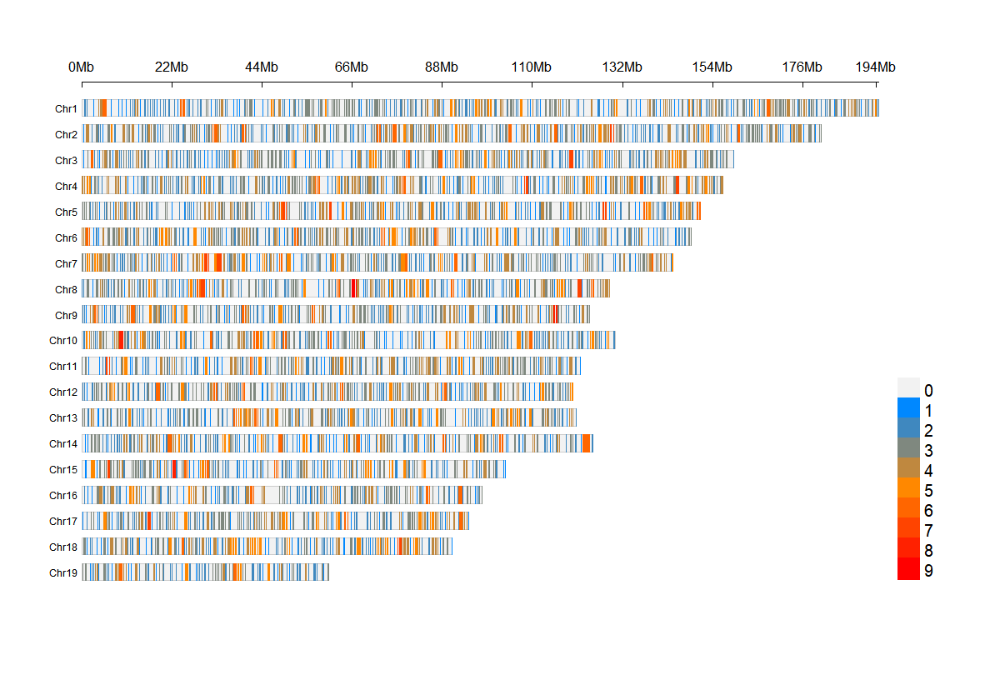
Plot genomic weighted FST heatmap
# Plot weighted FST
plot_snp_fst(
fst_file = fst_file,
bin_size = 1e6,
metric = "fst_mean",
orientation = "horizontal",
palette = c("#ffffff", "#aa00aa"),
alpha = 0.9
)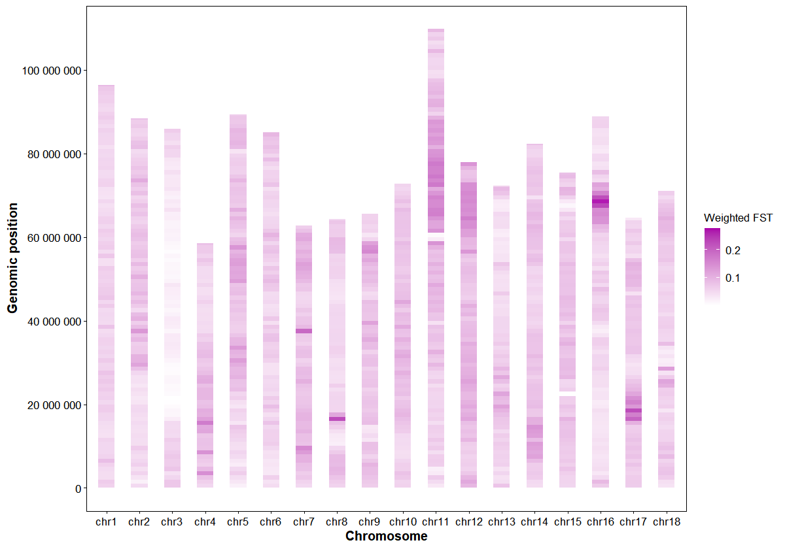
Plot genomic FST with Top-N gene annotations
# Chromosome FST with Top-20 gene annotations on chr11
plot_snp_anno(
fst_file = fst_file,
gff_file = gff_file,
format = "auto",
chrom_id = "chr2",
top_n = 20,
orientation = "vertical",
smooth_span = 0.5,
fst_color = "#0088ff",
point_size = 1,
point_alpha = 0.3,
label_size = 3,
connector_dx1 = 2e4,
connector_dx2 = 4e4,
gap_frac = 0.05
)
8. DMG Anno & Plot
Plot differentially methylated regions (DMRs) hyper/hypo distributions by chromosome
# Plot chrom DMRs
plot_dmg_chrom(
dmr_file = dmr_file,
violin_scale = "count",
violin_border = 0.5,
point_shape = 8,
point_size = 2,
jitter_width = 0.2,
hyper_color = "#ff880088",
hypo_color = "#0088ff88"
)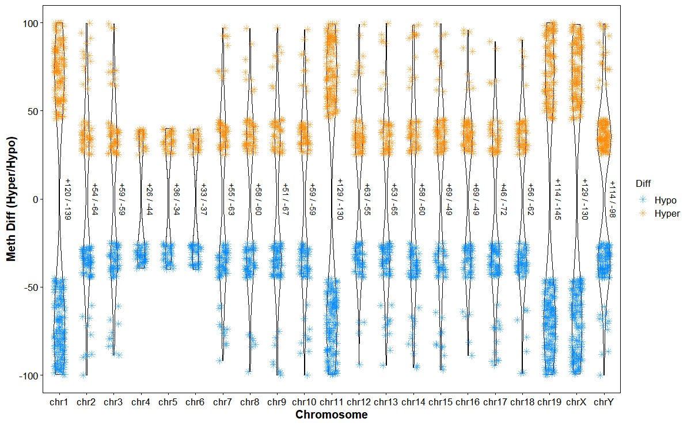
Plot DMGs hyper/hypo along chromosomes
# Plot DMG expression
plot_dmg_exp(
dmr_file = dmr_file,
orientation = "horizontal",
chrom_alpha = 0.1,
chrom_color = "#008888",
point_size = 1,
point_alpha = 0.3,
hyper_color = "#ff0000",
hypo_color = "#008800",
mark_style = "line",
line_width = 0.6,
line_height = 0.8)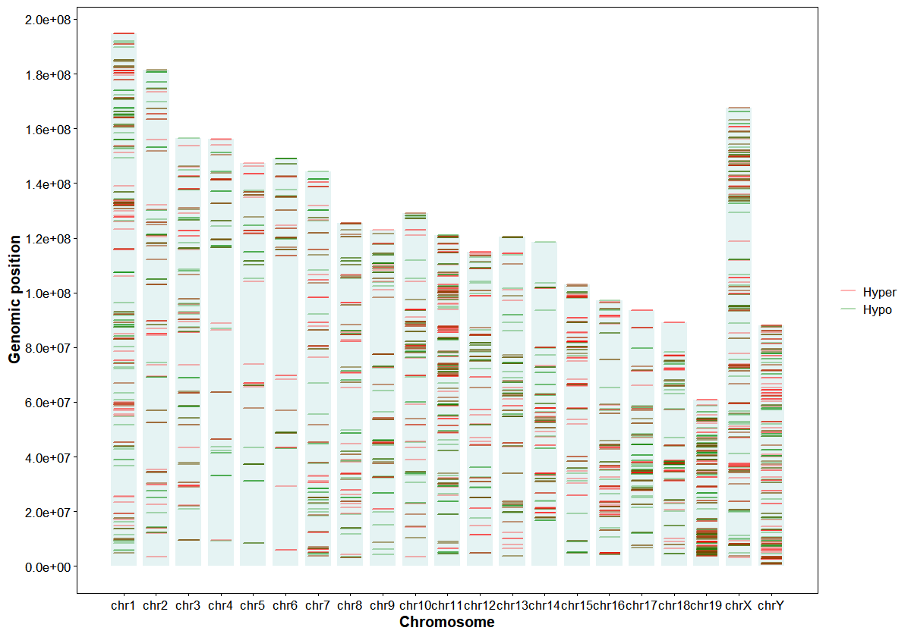
Plot DMGs circos across chromosomes
# Plot DMG circos
plot_dmg_circos(
dmr_file = dmr_file,
gff_file = gff_file,
format = "auto",
label_type = "name",
gene_table = NULL,
y_transform = "none",
chrom_height = 0.08,
chrom_color = "#eeeeee",
chrom_border = "#cccccc",
chrom_cex = 0.8,
gap_degree = 1,
x_tick_by = 2e7,
axis_cex = 0.5,
last_gap_degree = 3,
scatter_height = 0.15,
top_up = 30,
top_down = 30,
up_color = "#ff0000",
down_color = "#008800",
point_cex = 0.5,
annotation_height = 0.18,
label_cex = 0.5,
label_rotate = 0,
label_font = 1,
connector_lwd = 0.5,
connector_col = "#333333",
connector_len = 0.2,
connector_elbow = 0.8)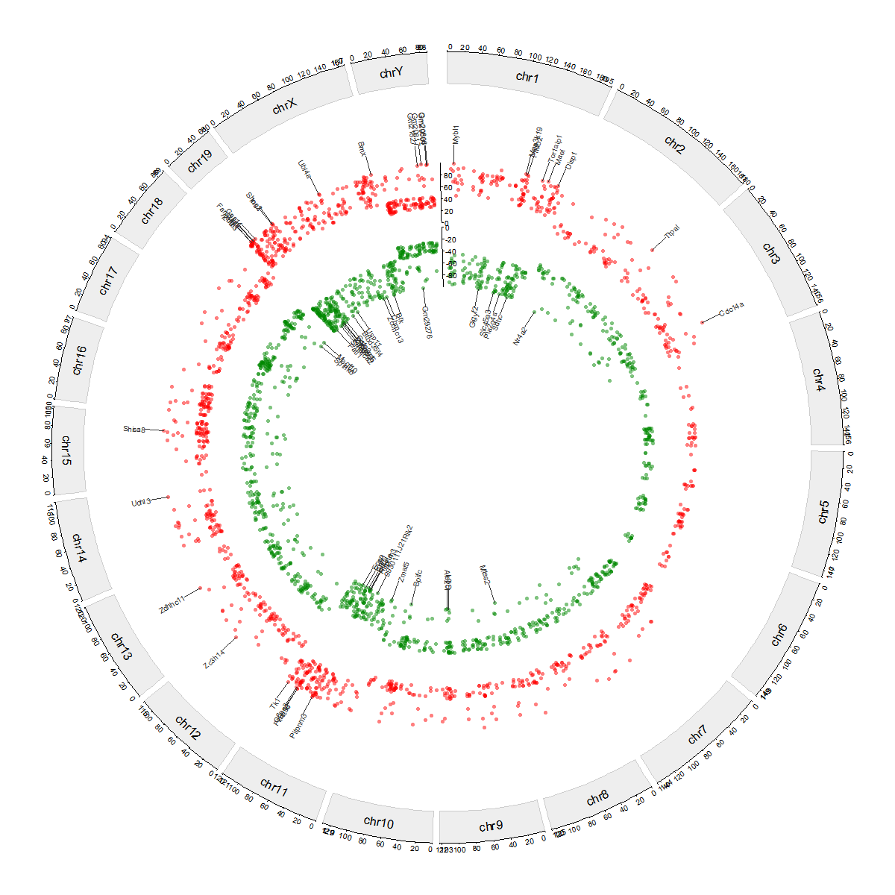
Plot DMGs manhattan plot across chromosomes
# Plot DMG Manhattan
plot_dmg_manhattan(
dmr_file = dmr_file,
gff_file = gff_file,
format = "auto",
gene_table = NULL,
label_type = "name",
label_col = NULL,
y_transform = "none",
chromosome_spacing = 1e6,
hyper_color = "#ff0000",
hypo_color = "#008800",
point_size = 1,
point_alpha = 0.5,
label_top_n = 10,
label_size = 3,
gap_frac = 0.04,
connector_dx1 = NULL,
connector_dx2 = NULL,
connector_elbow = 0.8,
connector_tilt_frac = 0.2)
Plot chromosomal DMGs trend
# Plot DMR trend
plot_dmg_trend(
chrom_id = "chr1",
dmr_file = dmr_file,
smooth_span = 0.1,
hyper_color = "#ff0000",
hypo_color = "#008800",
point_size = 3,
point_alpha = 0.5
)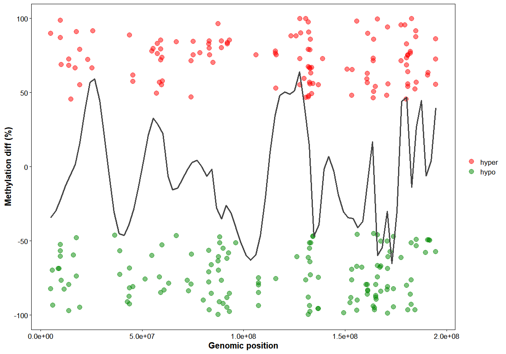